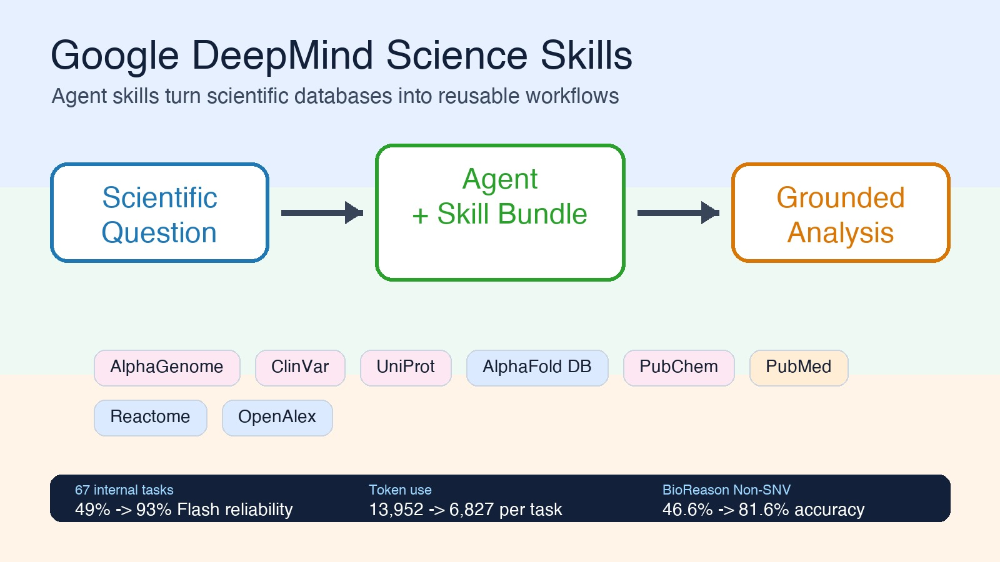
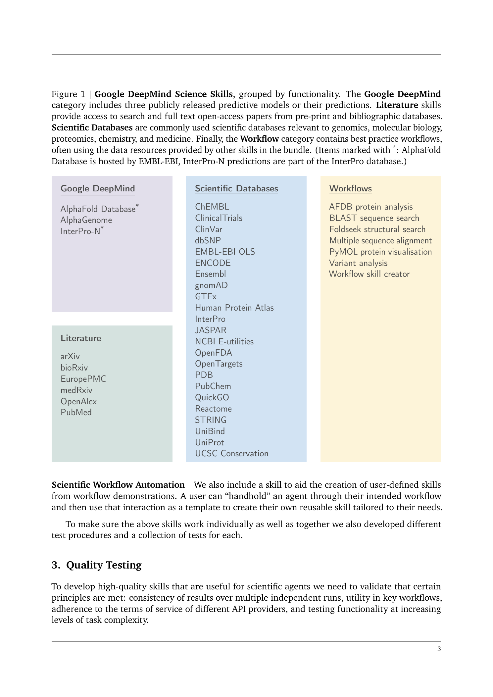
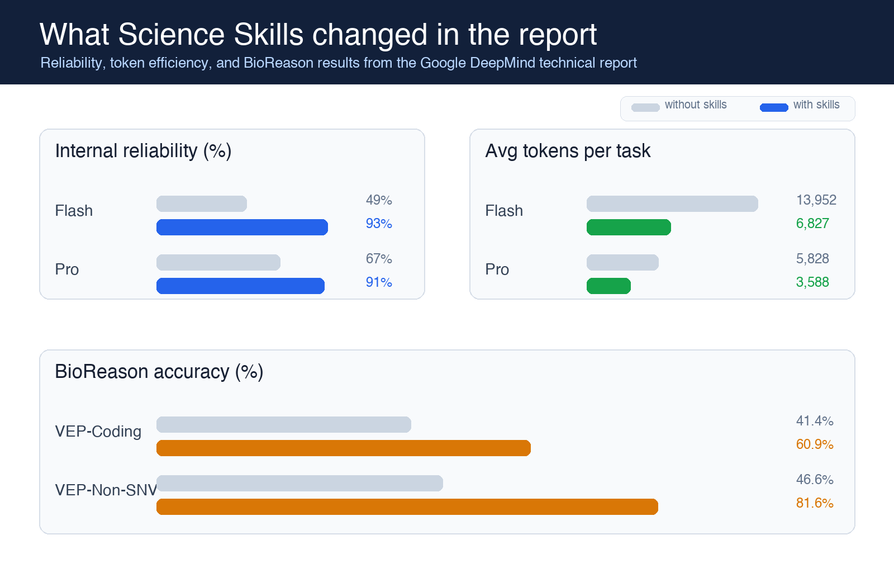
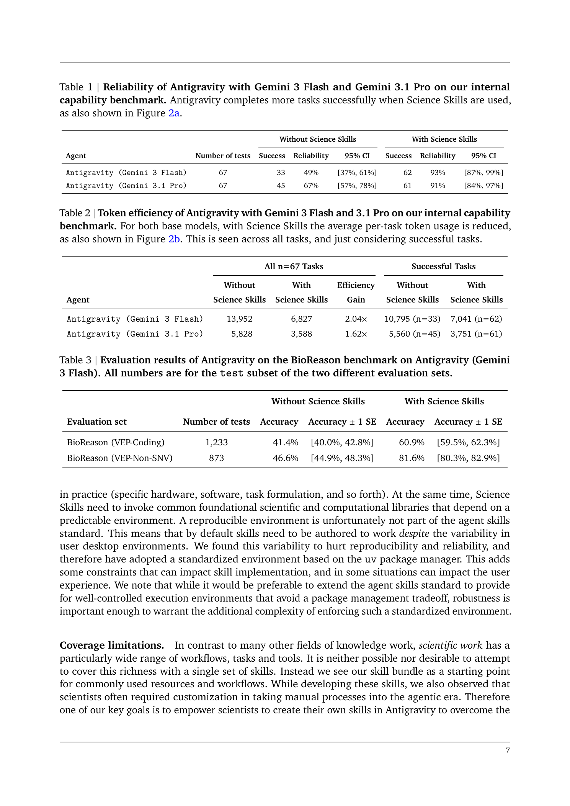

Google DeepMind가 에이전트에게 30개 이상의 생명과학 데이터베이스를 한 번에 쓸 수 있게 만들었다. 유전체 분석, 단백질 구조 예측, 약물 후보 탐색, 임상시험 검색까지—연구자가 수시간 걸리던 워크플로를 몇 분 안에 끝내는 ‘Science Skills’ 번들을 공개했다. 그것도 에이전트가 알아서 도구를 고르고, 순서를 짜고, 결과를 종합하는 방식으로.
이건 “과학용 API 몇 개를 연결해놨습니다”와는 차원이 다른 이야기다.

“에이전트한테 스킬을 준다”는 게 뭔 소리인가요
에이전트는 강력하지만, 뭘 모르는지를 모르는 상태로 돌아간다. UniProt(단백질 데이터베이스)에 어떤 파라미터를 넣어야 하는지, AlphaGenome(유전체 예측 API)의 응답을 어떻게 해석해야 하는지, ClinVar(임상 유전변이 DB)의 스키마가 어떻게 생겼는지—이런 도메인 지식이 없으면 에이전트는 그냥 똑똑한 채팅 상대에 머문다.
DeepMind의 Science Skills는 이 도메인 지식을 에이전트에게 “숙달된 기술”로 주입한다. 각 스킬은 SKILL.md(지시서), scripts/(실행 스크립트), references/(참고문헌)로 구성되어 있어서, 에이전트가 스스로 판단해서 적절한 스킬을 꺼내 쓴다. 연구자가 “이 유전자 변이가 어떤 질병과 관련 있는지 찾아줘”라고 하면, 에이전트가 ClinVar 스킬 → Ensembl 스킬 → Reactome 스킬의 순서로 자동으로 워크플로를 조립한다.
30개가 넘는 스킬, 뭘 할 수 있나요
GitHub에 공개된 스킬 목록만 봐도 깊이가 장난이 아니다. 생물학, 유전체학, 화학, 구조생물학, 문헌 검색까지 아우른다.
유전체·변이 분석
alphagenome_single_variant_analysis— AlphaGenome API로 유전체 변이 예측clinvar_database— 임상적 의미가 있는 유전변이 조회gnomad_database— 집단 유전변이 빈도 확인dbsnp_database— SNP 데이터베이스 검색ensembl_database— 유전체 브라우저·어노테이션encode_ccres_database— 유전자 발현 조절 요소 검색gtex_database— 조직별 유전자 발현량 비교ucsc_conservation_and_tfbs— 진화적 보존도 & 전사인자 결합 부위
단백질·구조생물학
alphafold_database_fetch_and_analyze— AlphaFold DB에서 단백질 구조 가져오기uniprot_database— 단백질 기능·서열 정보interpro_database— 단백질 도메인·패밀리 분류pdb_database— 실험적으로 결정된 단백질 구조foldseek_structural_search— 구조 기반 단백질 유사도 검색protein_sequence_msa— 다중 서열 정렬protein_sequence_similarity_search— 서열 유사도 검색pymol— 단백질 구조 시각화
약물·화학
chembl_database— 약물 후보 화합물 정보pubchem_database— 화합물 구조·생물활성 데이터opentargets_database— 약물 타겟-질병 연결openfda_database— FDA 승인 약물 데이터
문헌·지식
literature_search_arxiv— arXiv 논문 검색literature_search_biorxiv— bioRxiv 프리프린트literature_search_openalex— OpenAlex 학술 데이터literature_search_europepmc— Europe PMC 생명과학 논문pubmed_database— PubMed 의학 문헌
경로·네트워크
reactome_database— 생물학적 경로 분석·유전자 리스트 풍부도string_database— 단백질 상호작용 네트워크human_protein_atlas_database— 조직별 단백질 발현quickgo_database— Gene Ontology 어노테이션jaspar_database— 전사인자 결합 모티프unibind_database— 전사인자-게놈 결합 데이터embl_ebi_ols— 생명과학 온톨로지 검색
그리고 메타 스킬
workflow_skill_creator— 연구자가 자신의 워크플로를 스킬로 만들기
여기서 주목할 건 진입장벽이 낮다는 거다. npx skills add google-deepmind/science-skills/ 한 줄이면 전체 번들이 설치된다. Google Antigravity(구글의 에이전트 IDE)에서는 설정에서 체크박스 하나만 클릭하면 된다.

리포트의 핵심은 “좋아 보인다”가 아니라 “측정했다”이다
이번 공개가 흥미로운 이유는 GitHub에 스킬 목록만 던져놓은 게 아니라, 품질 테스트와 벤치마크 결과를 같이 냈다는 점이다. 리포트는 세 단계로 검증한다.
첫째, unit test. 각 스킬이 자기 역할을 정확히 수행하는지 본다. 예를 들어 Ensembl 스킬이 특정 transcript ID에서 유전자 심볼과 UniProt ID를 제대로 찾는지 확인한다.
둘째, workflow test. 여러 스킬을 순서대로 엮을 수 있는지 본다. FOXP2 주변의 보존도 확인 → 보존 영역의 변이 검색 → 변이 기능 예측처럼, 한 번의 API 호출로 끝나지 않는 과학 워크플로를 평가한다.
셋째, capability test. 특정 스킬 사용 여부를 강제하지 않고, 실제 과학 질문에 얼마나 잘 답하는지 본다. 내부 벤치마크는 67개 과제로 구성되어 있고, 외부 평가는 변이 효과 추론 벤치마크인 BioReason을 사용했다.
여기서 숫자가 꽤 세다. 내부 67개 과제에서 Gemini 3 Flash 기반 Antigravity는 Science Skills 없이는 33개만 성공해서 49% 신뢰도였는데, 스킬을 붙이자 62개를 성공해 93%까지 올라갔다. Gemini 3.1 Pro도 67%에서 91%로 올랐다. 더 재미있는 건 Flash+Skills가 Pro without Skills보다 높다는 점이다. 모델을 더 키우는 것보다, 도구 사용법을 구조화해서 주는 쪽이 더 큰 효율을 낸 사례다.
토큰 효율도 같이 좋아졌다. Flash 기준 평균 토큰 사용량은 과제당 13,952개에서 6,827개로 줄었다. 약 2.04배 효율 개선이다. Pro도 5,828개에서 3,588개로 줄어 1.62배 개선됐다. 과학 데이터베이스는 문서와 스키마가 복잡해서 에이전트가 매번 읽고 헤매기 쉬운데, 스킬이 “어떻게 접근하고 어떻게 해석할지”를 미리 압축해주는 효과가 나온 셈이다.

몇 시간의 작업이 몇 분으로: AK2 유전병 사례
Google 연구팀이 실제로 보여준 사례가 인상적이다.
AK2 유전자에 변이가 있으면 희귀 유전병이 유발된다. 이 변이가 왜 질병을 일으키는지 메커니즘을 밝히려면, 평소라면 여러 데이터베이스를 오가며 수시간이 걸리는 수작업 분석이 필요하다. 변이의 빈도를 확인하고, 관련 생물학적 경로를 찾고, 단백질 구조 변화를 예측하고, 문헌을 뒤지는 과정을 각각 다른 도구에서 수행해야 한다.
Science Skills가 장착된 에이전트에게 이 작업을 맡겼더니 몇 분 만에 잠재적 메커니즘에 대한 통찰을 도출했다. 물론 “에이전트가 과학자를 대체한다”는 이야기가 아니다. 중요한 건 지루하고 반복적인 데이터 수집·조립 작업을 자동화해서, 연구자가 통찰과 가설 검증에 더 많은 시간을 쓸 수 있게 된다는 점이다.
왜 API 연동이 아니라 ‘스킬’인가요
“이미 API가 있는데 왜 스킬이라는 새로운 형태가 필요한가?” 하는 질문이 자연스럽다.
기술 리포트가 밝히는 핵심 설계 결정은 토큰 효율성과 신뢰성이다.
API를 직접 호출하면, 에이전트는 매번 API 문서를 읽고, 엔드포인트를 찾고, 파라미터를 맞추고, 응답을 해석하는 데 수천~수만 토큰을 소모한다. 그리고 자주 틀린다. 스키마가 복잡한 과학 DB에서는 특히 심각한데, 잘못된 파라미터로 호출하면 에러가 돌아오고, 에이전트는 또 다시 문서를 읽으며 재시도하는 루프에 빠진다.
스킬은 이 반복적 인지 부하를 구조화된 지시서로 대체한다. “이 데이터베이스는 이렇게 쿼리하고, 응답은 이렇게 해석하라”는 명확한 지시가 SKILL.md에 적혀 있으니, 에이전트는 매번 문서를 다시 읽을 필요가 없다. 결과적으로 더 적은 토큰으로 더 정확한 결과를 낸다.
리포트의 실험에서는 Flash급 모델이 Science Skills를 장착하면 Pro급 모델(스킬 없음)과 맞먹거나 능가하는 신뢰성을 보였다고 한다. 모델을 키우는 대신 도구 사용법을 가르치는 접근이라고 볼 수 있다.
외부 벤치마크에서도 비슷한 패턴이 보인다. BioReason의 VEP-Coding subset에서는 정확도가 41.4%에서 60.9%로, VEP-Non-SNV subset에서는 46.6%에서 81.6%로 올라갔다. 특히 Non-SNV 쪽 상승폭이 큰데, 단순 지식 암기보다 데이터베이스 조회와 절차적 해석이 필요한 문제에서 스킬의 가치가 더 잘 드러난다.

“나만의 스킬도 만들 수 있습니다”가 핵심이다
Science Skills 번들이 30개가 넘는 스킬을 제공하지만, 과학의 모든 워크플로를 커버할 수는 없다. DeepMind도 이 한계를 인정한다.
그래서 workflow_skill_creator라는 메타 스킬을 넣었다. 연구자가 에이전트를 “손잡이 잡고 운전하는 것처럼” 직접 안내해서 워크플로를 한 번 보여주면, 에이전트가 그 과정을 분석해서 재사용 가능한 스킬로 자동 생성한다. 한 번 가르치면 계속 쓸 수 있고, 다른 연구자와 공유할 수도 있다.
이건 단순히 도구를 많이 만든 게 아니라, 과학자가 에이전트의 능력을 스스로 확장할 수 있는 생태계의 초석을 깔았다는 뜻이다. 스킬 번들이라는 “씨앗”을 심어놓고, 커뮤니티가 각자의 워크플로를 추가하는 방식으로 성장을 기대하는 구조다.
그래서, 이게 왜 중요한가요
과학 연구에서 AI가 “논문 요약해줘”를 넘어서 실제 분석 워크플로를 자동화하기 시작했다는 점이 핵심이다. Science Skills는 LLM이 텍스트 생성기를 넘어서 도구를 다루는 연구 보조자 역할을 한다는 걸 보여주는 구체적 증거다.
물론 한계도 명확하다. 현재는 생명과학 중심이고, 실험실 작업이나 물리적 시뮬레이션은 커버하지 못한다. API 키가 필요한 스킬도 있고(AlphaGenome, OpenAlex), 데이터베이스의 라이선스 제약도 따라온다.
리포트가 스스로 인정하는 한계도 중요하다. 과학자의 환경은 제각각이라 재현 가능한 실행 환경을 보장하기 어렵고, 그래서 uv 기반 표준 환경을 전제한다. 이건 실용적이지만, 사용자의 로컬 환경에 따라 마찰이 생길 수 있다. 또 현재 평가는 수십 단계·수시간 수준의 워크플로까지를 염두에 둔 것이고, 며칠짜리 장기 연구나 실험실 자동화까지 검증한 건 아니다.
그래서 이걸 “과학자 대체”로 읽으면 과장이다. 더 정확히는 반복 가능한 과학 데이터 워크플로를 에이전트가 덜 틀리고 덜 비싸게 수행하도록 만드는 레이어다. 좋은 연구 질문을 세우고, 결과가 말이 되는지 검토하고, 이상한 결론을 의심하는 일은 여전히 사람 쪽에 남아 있다.
하지만 방향성은 분명하다. 에이전트가 도메인 지식을 갖춘 도구 사용자로 진화하고 있고, 그 진화의 최전선에 과학이 있다. DeepMind가 AlphaFold로 단백질 구조 예측을 민주화했듯이, Science Skills는 과학적 데이터 분석의 민주화를 시도하고 있다.
Google DeepMind Science Skills는 GitHub에서 오픈소스로 공개되어 있으며, 기술 리포트도 함께 배포되었다. Apache 2.0 및 CC-BY 라이선스.